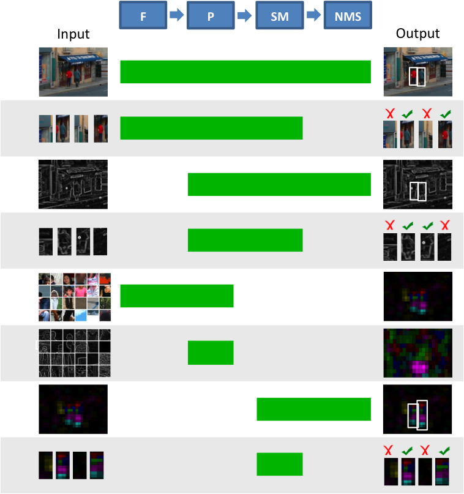
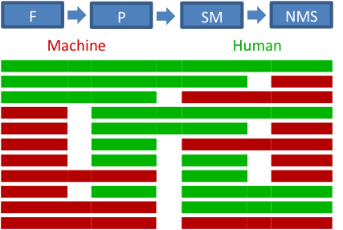
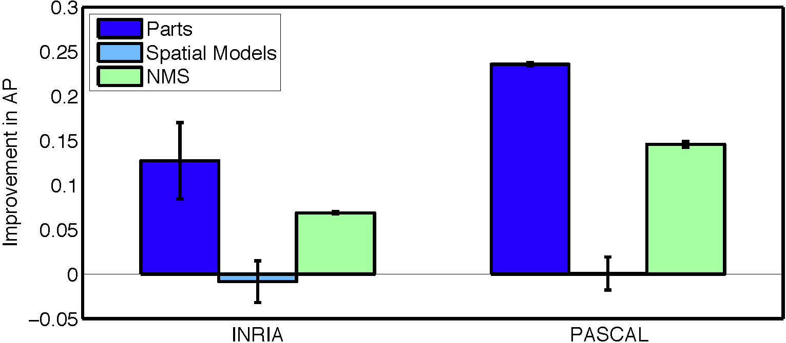

Finding
the Weakest Link in Person Detectors
[Part Patch Dataset]
[part
detection visualizations] [paper] [slides]
[In Chinese by Falk Albert]
[In Ukranian by Fixgerald]
[In Polish by TopWritersReview]
[In French by GrabMyEssay]
[In Russian by Babur Muradov]
[In Spanish by Chicks Gold]
[In Ukrainian by Essay Writing Service StudyCrumb]
[In Czech by Studybounty.com]
Abstract
Motivation
Person detection is an important, but open and challenging problem in computer vision. Recently, person detectors have made significant progress using part-based models. Researchers have explored various feature representations of images, different appearance models for parts, sophisticated spatial modeling of the object configurations, as well as expressive non-maximal suppression and context models. Each of these approaches propose a complex set of interdependent components to provide final detection results. While the additional complexity of the approaches have led to increased performance, understanding the role of each component in the final detection accuracy is difficult.
Proposal

Experiments
and Results
We evaluate the detection accuracy of various detectors (see below) composed of various combinations of the components performed by human subjects or machine implementations.

Comparisons between various subsets of these detectors allow us to tease apart the influence of each of the components in the parts-based person detection pipeline. While we encourage you to take a look at the detailed comparisons in the paper, a summary of the results obtained on the PASCAL 2007 and INRIA datasets can be seen below. We find that part detection is the weakest link in part-based person detection. Non-maximal suppression also influences the performance in a non-trivial way. However, the use of human or machine spatial models does not significantly affect detection accuracy.

Among the large amounts of human data we collected as part of our experiments, we believe the following might be of interest to the community.
We
had
A snapshot of the data can be seen below, which shows example patches classified by most subjects as head, torso, leg and none.
Similarly, we also had 10 human subjects classify overlapping image sub-windows (total of 6,218 x 6 = 37,308 windows) as containing a person or not (similar to 'root' detection). As with parts, the sub-windows were extracted from high and low resolution color, grayscale and normalized gradient images.
We provide this part (patch) and root (window) classification data as the Part Patch dataset.
** Download ** Part
Patch Dataset
[89.3
MB]
** Browse ** Visualizations of some images using the human and machine detected parts can be viewed here: INRIA_50 PASCAL2007_100. The first six columns display human detected parts (on highres regular, grayscale, normalized gradient, lowres regular, grayscale and normalized gradient images), and the last column shows machine detected parts on high resolution images using the detectors of Felzenszwalb et al. 2010. For human detected parts, the colors correspond to the different parts of a person (red: head, green: torso, blue: arm, yellow: hand, magenta: leg, cyan: feet, white: root (person), black: none). Each patch is displayed with a color corresponding to the category that received the most votes across the 10 subjects. The intensity of the color corresponds to the number of subjects that selected the class. For machine detected parts, the six colors are arbitrarily assigned to six parts, and the intensity of the color corresponds to the score of the part detection.
Finding the Weakest Link in Person Detectors
IEEE Conference on Computer Vision and Pattern Recognition (CVPR), 2011
Support
This material is based upon work supported in part by the National Science Foundation under Grant No. 1115719. Any opinions, findings, and conclusions or recommendations expressed in this material are those of the author(s) and do not necessarily reflect the views of the National Science Foundation.
[Thanks to Yong Jae Lee for the webpage template]
{kind=link}
{kind=link}